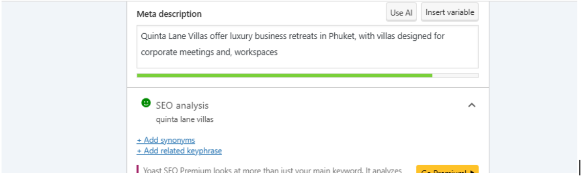
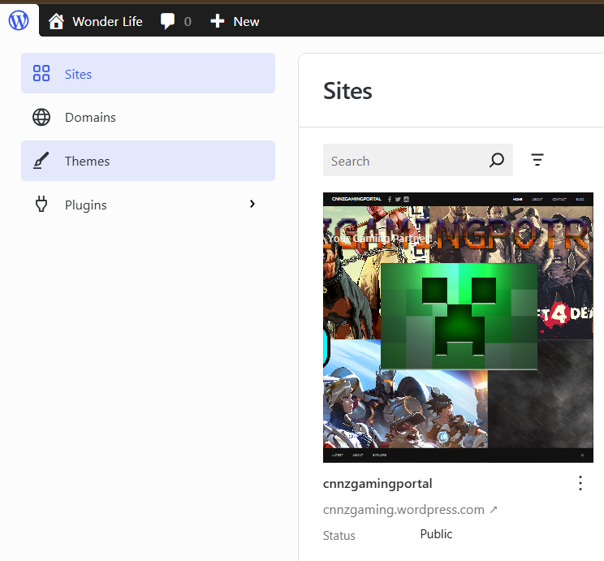

Work samples
Research, strategy, content, and implementation.
A selection of portfolio materials that support the work described in my case studies.
Keyword strategy
Research and prioritization.
Samples showing how raw keyword information is organized into clearer opportunities and content direction.


Content operations
From research to finished content.
Examples of the workflow behind content planning, review, and finalization.


Website implementation
Sites and web projects.
Website work supporting my SEO, content, and digital marketing capabilities.

Current project
IslaClean Palawan
A live multi-page local-service website covering SEO structure, content, local relevance, internal linking, calls to action, and tracking-ready interactions.
Professional work
More experience than can fit on a public page.
I have also worked with monthly marketing reviews, reporting, email campaign performance, citation and backlink operations, website updates, onboarding, and recurring marketing workflows.
Available to discuss in an interview: reporting structure, keyword methodology, content planning, competitor research, off-page SEO, email performance, website updates, onboarding, task management, and growth operations.